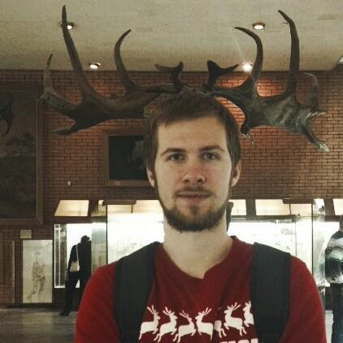

Vladislav Lisetskii
- Position: Fullstack developer (Java/Javascript)
- Age: 25
- City: Moscow

Summary
I am a Java developer who became tired of constant enterprise development hell, so I have mastered frontend
development to have more fun. I have lots of experience in processes and methodologies obtained during numerous
projects for big and small clients. I am seeking of a well-paid and interesting position as a fullstack
developer.
Skills
- Highly expirienced in remote work and have good communication skills.
- HStrong abilitity to manage legacy code and adapt for customer needs.
- Key skills: Core Java, SQL, SVN, Git, JUnit, TDD, Maven, CI, Checkstyle, JBoss Fuse, Spring DI, Spring Cloud
- Frontend: js, html, css
Latest project
2018-now Java Tech Lead
Big project with big responsibilities. I have roles of technical lead in a team of 3-5 people.
One more project
2017-2018 Java Developer
Foreign project with old technologies. I've go a lot of managing experience here.
One of the first projects
2016-2017 Junior Java Developer
A lot of boring stuff for juniors as always.
Sevastopol State University
2010-2016 Maters Degree
Masters degree in computer engineering.
English courses
English school
Got B2 FCE certificate as a result.